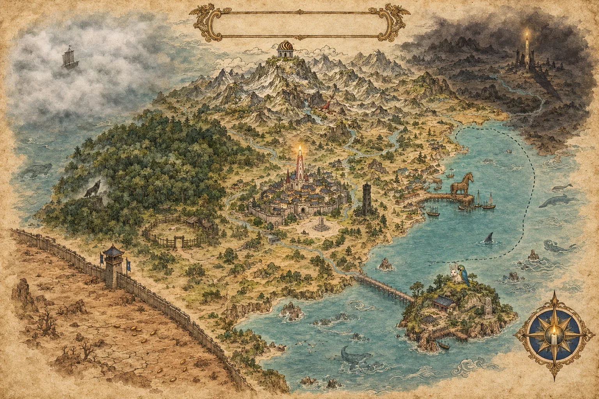

지도의 지명을 누르거나 아래 일람에서 고르면 그 땅의 기록이 여기에 펼쳐진다.

추 모 공 화 국
국 가 전 도
MAP OF THE MEMORIAL REPUBLIC
凡 例
이 지도에는 사건이 있었던 자리만 지명으로 올린다.
산이 있어도 일이 없었으면 이름을 붙이지 아니하였고, 땅이 비어 있어도 일이 있었으면 이름을 적었다.
그래서 지도의 빈 곳은 아직 아무 일도 일어나지 않은 곳이다.
| 실선 | 확정된 국경 |
|---|---|
| 점선 | 편입이 유보된 경계. 북항 해역이 유일하다 |
| 영외 | 국경 밖이나 국가의 기록이 미치는 곳 |
전 도

지명을 누르면 기록이 열린다
행 정 구 역 일 람
| 지명 | 기원 |
|---|